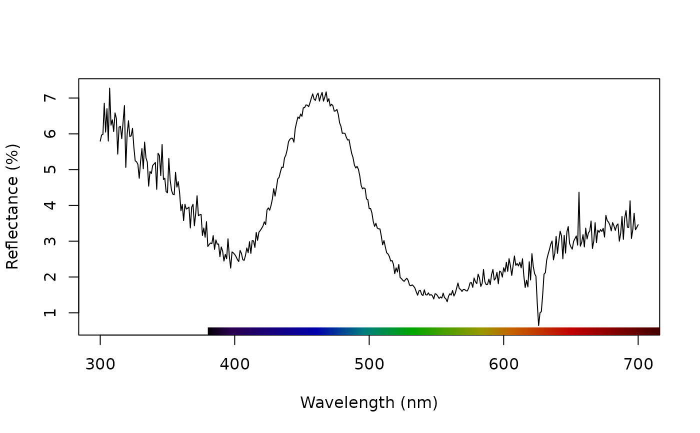

Applies normalization and/or smoothing to spectra for further analysis or plotting.
procspec( rspecdata, opt = c("none", "smooth", "maximum", "minimum", "bin", "sum", "center"), fixneg = c("none", "addmin", "zero"), span = 0.25, bins = 20 )
Arguments
| rspecdata | (required) a data frame, possibly of class |
|---|---|
| opt | what type of processing options to apply. User can select multiple options by providing a vector. Possibilities are:
|
| fixneg | how to handle negative values. Possibilities are:
|
| span | sets the smoothing parameter used by |
| bins | sets the number of equally sized wavelength bins for |
Value
A data frame of class rspec with the processed data.
References
Cuthill, I., Bennett, A. T. D., Partridge, J. & Maier, E. 1999. Plumage reflectance and the objective assessment of avian sexual dichromatism. The American Naturalist, 153, 183-200.
Montgomerie R. 2006. Analyzing colors. In Hill, G.E, and McGraw, K.J., eds. Bird Coloration. Volume 1 Mechanisms and measurements. Harvard University Press, Cambridge, Massachusetts.
White, T. E., Dalrymple, R. L., Noble D. W. A., O'Hanlon, J. C., Zurek, D. B., Umbers, K. D. L. 2015. Reproducible research in the study of biological coloration. Animal Behaviour, 106, 51-57.
See also
Author
Chad Eliason cme16@zips.uakron.edu
Examples
# Smooth data to remove noise teal.sm <- procspec(teal, opt = "smooth", span = 0.25)#> #>#> #>